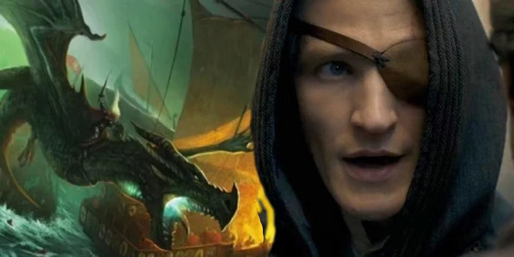

Dragões de HOTD e GOT


- 


Caraxes
Caraxes, também chamado de Wyrm de Sangue e Verme Sangrento, foi o dragão montado pelo Príncipe Aemon Targaryen durante o reinado do Rei Jaehaerys I Targaryen e, mais tarde, pelo Príncipe Daemon Targaryen durante a Dança dos Dragões.
Ele era vermelho, imenso e magro. Em batalha era formidável, temível e experiente. Durante a Dança, Caraxes tinha metade do tamanho de Vhagar. Famoso por sua ferocidade, ele era esguio e de cor vermelho-sangue. Com o passar dos anos, ele se tornou cada vez mais formidável e experiente.